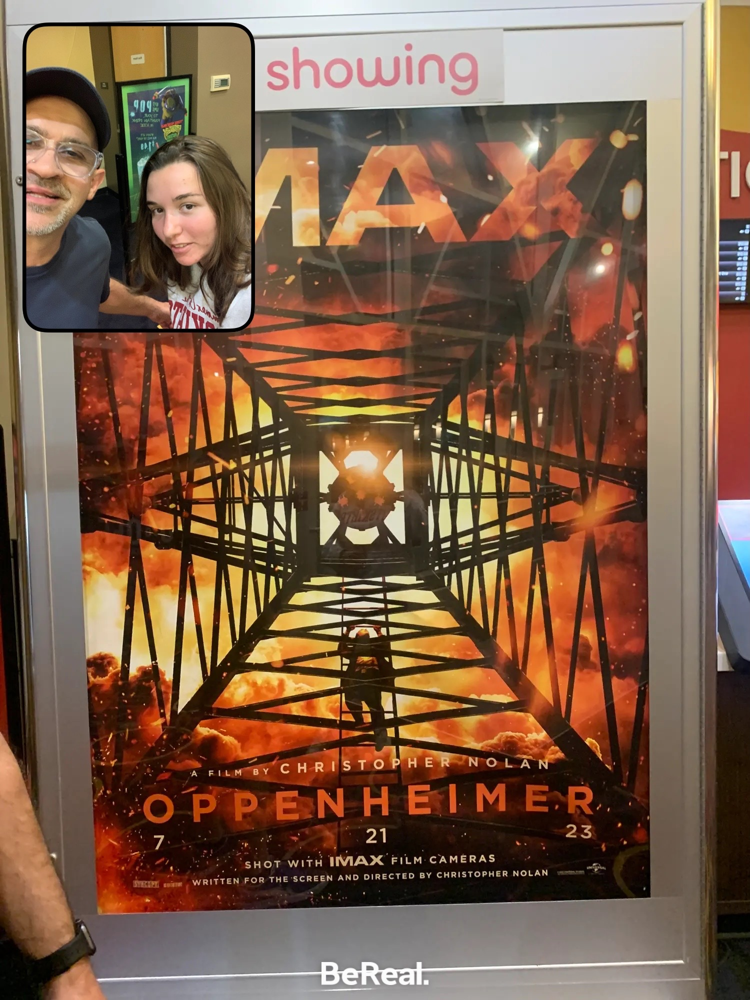

My Movie Taste
My Keirsey Temperament Scale showed that I am an ISTJ. This is significantly different from my first-year results—which I can't find for sure, but I believe I was an ENTJ. The biggest shifts from freshman year to now were Extroverted to Introverted and Intuition to Sensing.
First, I think it is important to look at the personality type that I started school as—ENTJ. Some of the characteristics associated with this personality type are practical and realistic, not interested in something that they see no use in, likes to organize and run activities, responsible and orderly, loyal, and sometimes impatient. Personally, I still see a lot of these traits in myself. I am very organized, loyal, and impatient. Although, this could be a very subjective perspective and biased.
Now onto my most recent results, ISTJ. The traits associated with this type are serious, quiet, practical, orderly, realistic, and dependable. They are also detail oriented, and patient. Just as above, I see some of these traits in me, but there are ones that don't apply. For example, I am serious and dependable, but I am not at all detail oriented or patient.
I don't necessarily know how accurate this most recent test was—I don't really agree with my personality type. With all of this in mind, I did take the Myers-Briggs after taking the Keirsey to double check my personality type. Upon taking the Myers-Briggs, the result I received matched my Keirsey results, so I guess I need to accept that I have a blind-spot and might not fit solely in the ISTJ category, but it is my strongest one.
Reflecting upon the previous four years and everything that I have been around over my time here, I can try to identify why there were switches in my personality type. Most recently, my mother passed away at the end of January. I feel like this might be a large part of the reason that I have shifted from intuition to sensing. Everything that led up to her passing away could have changed the way I think and interpret information. She was diagnosed with cancer in early July and over the six months, what was factored into my decisions—especially whether to stay home or come back to Indianapolis. This could be temporary or permanent. As for the introversion versus extroversion, I have no explanation for the change, maybe it was also impacted by my mother's death.
In terms of my career, there are a lot of different characteristics that serve as strengths and motivators for ISTJs. Some of my strengths based on my personality type are precision and accuracy, readiness to follow routines, ability to focus, organizational skills, sense of responsibility, work ethic, and a realistic perspective. Some of my weaknesses are reluctance to embrace new ideas, discomfort with change, impatience with processes that take time, unwillingness to focus on the future at the same time as the present, inflexibility, and lack of sensitivity. My motivators are working with real products, independence, stable environment, tangible results, explicit objectives, increasing levels of responsibility, being valued and rewarded, and having the resources to meet my goals.
All of this information my guide me to a career more based on numbers. A lot of what I have done throughout my internships has been content creation which has tangible results but it is a little less tangible—it takes a lot of creativity which is not always a strength, at least according to my personality type. This in a marketing world can mean analytics and consumer insights. A lot of this work would be a little bit more detail oriented and have some more tangible results. Purchase behaviors are often harder to trace back to a specific post, email, or graphic when in a content creation role. In an analytics role, I would also mean a more stable environment with more explicit objectives—often in content creation you are given a lot of creative freedom, so the ultimate goals and guidelines aren't always very clear.
Why I Love Movies
At this point in time, I have no idea what my purpose is from a career standpoint. I think that my purpose might be to take care of people—but I don't really know how that translates into a career other than being a nurse or a therapist, and besides the fact that I am about to graduate and don't have time to study that right now, I am not the best with blood or numbers and both are things that you have to be good at math. I think that from a business standpoint—as I am a business student, that could mean Human Resources. As much as people annoy me, I do like to be around people, and I like to help. I think that Human Resources might be something that incorporates these in the business world. Or maybe a recruiter for a company.
My passion is easy, I know what I like to do. I think, as stupid as it might sound, it would be super cool to work in a movie theater or be one of the people that sells merch at concerts. I don't know. I love movies and music—and even if it's the most monotonous job—I think it would be super cool to be a part of that world.
Based off my passion and purpose, I think the ideal job for me—the job that combines the two, would be either one of the jobs I mentioned when talking about my purpose but working for a production company, or one of the streamers, or live nation. Or it could be being on the culture committee for one of those companies. At my current internship, there is a culture committee—they plan tons of office events. They planned a Superbowl party and a march madness party. I like doing stuff like that—putting stuff together and planning. I think that this would continue to challenge me, but it would be something that the challenge would excite me.

Website PurposeI have loved movies and film my whole life. I love the idea that it is a way to share different stories from different perspectives. Anyone knows me knows that movies make up a large part of who I am.